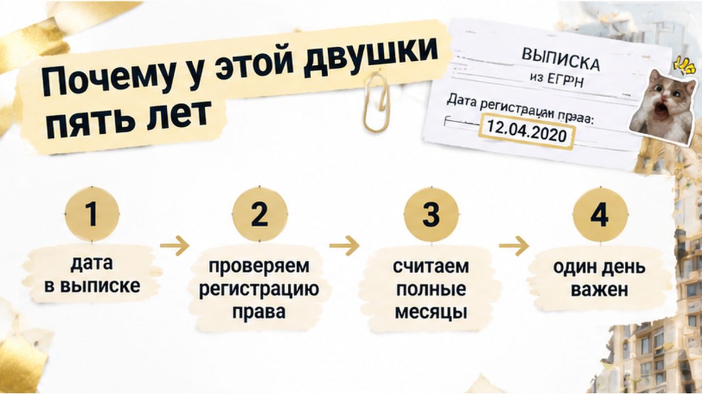
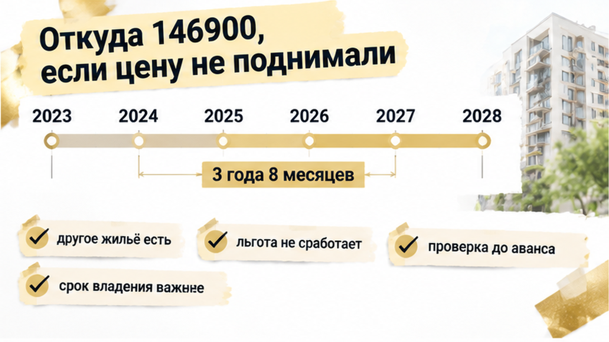
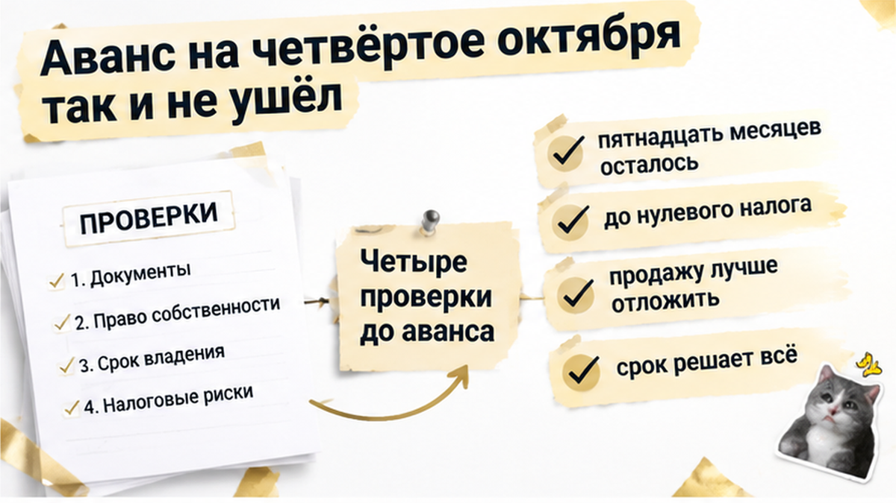
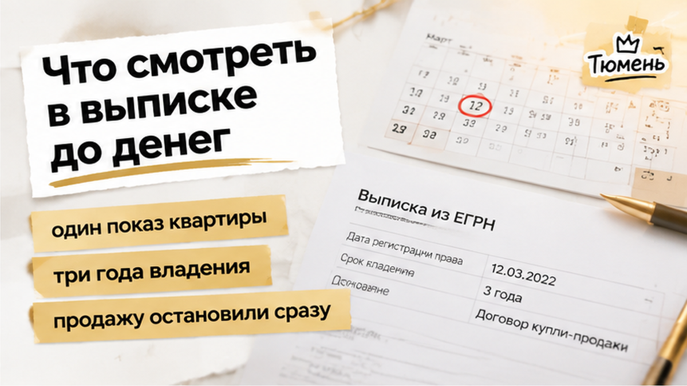
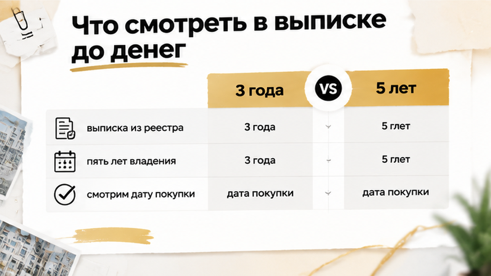

В Тюмени сделку по двушке на вторичке продавец остановил за день до аванса — ему не хватило 15 месяцев до нулевого налога, и аванс так и не перевели. Покупатели 3 октября 2026 года сидели у меня в офисе с телефоном в руке — сумма уже была набрана в банковском приложении, и ждали они только моей команды «переводим». Вечером продавец перезвонил и спокойно сказал, что продавать сейчас не будет и подождёт до января 2028-го, когда налог уйдёт в ноль. Цену он не поднимал и занизить сумму в договоре не предлагал, он просто не хотел отдавать государству ни рубля. А у покупателей одобрение банка на ипотеку именно этой квартиры заканчивалось в конце октября, и ждать пятнадцать месяцев они не могли.
Про налог продавец заговорил сам, ещё на первом показе. Говорил спокойно, как человек, который давно всё посчитал.
«Я квартирой владею больше трёх лет, налога не будет, можете не переживать», — сказал он и показал на телефоне дату покупки.
Цифра «три года» сидела у него в голове крепко. Знакомый когда-то продал квартиру через три года и ничего не заплатил. Значит, решил он, и у него будет так же.
Спорить на показе я не стал. Правило у меня простое: срок владения сверяю по выписке, а не по чьей-то памяти.
Выписку я заказал 2 октября, накануне аванса, и вечером сел её читать. Право продавца записано в реестре с 20 января 2023 года. Основание — договор купли-продажи готовой квартиры. На день аванса, 4 октября 2026-го, выходило 3 года 8 месяцев.
Человек три года слышал от знакомых «три года». А по выписке выходило пять. Знакомому трёх лет, может, и хватило. Для этой двушки их было мало.
Утром 3 октября я позвонил продавцу и аккуратно спросил, где он живёт. Оказалось, в другой своей квартире, а эту двушку он когда-то купил «на будущее». На том конце помолчали, потом сказали: «Перезвоню».
Чем закончился его вечерний звонок, вы уже знаете.

Три года работают не для всех квартир, а только в особых случаях. Наш был не из них.
Двушка досталась продавцу не по наследству и не через приватизацию. Он её просто купил, как покупают обычную квартиру.
Единственным жильём она тоже не была. Продавец живёт в другой квартире, с семьёй.
Значит, льготные три года отпадают целиком. Остаётся обычный срок: пять лет с даты записи в реестре.
Пять лет от 20 января 2023-го наступят 20 января 2028 года. От нашего несостоявшегося аванса до этой даты примерно пятнадцать месяцев. Продавцу не хватило не недели и не месяца, а больше года. Поэтому вариант «давайте подвинем сделку чуть-чуть» даже не обсуждали.
Обиднее всего, что продавец ни в чём не хитрил. Он искренне считал, что три года прошли и вопрос закрыт, и с этой уверенностью выставил квартиру. Покупатели поверили ему на слово: звучало убедительно, и держался он спокойно.
Если бы выписку с основанием права открыли на первом показе, а не накануне денег, про пять лет обе стороны узнали бы за месяц до аванса, а не за день.

Тут люди обычно путаются. Покупатели сначала подумали, что продавец решил поднять цену. А он ничего не просил. Цена осталась той, о которой договорились: 4 280 000. Занизить сумму в договоре он тоже не предлагал.
Налог появился сам по себе. Он считается от разницы между ценой продажи и ценой покупки, и никакие уговоры его не отменяют.
Считали мы прямо на кухне, ручкой на обороте распечатки. В 2023 году продавец купил эту двушку за 3 150 000, это видно по его договору. Продаёт за 4 280 000.
Разница 1 130 000. Для налоговой это его доход. Сумма меньше 2,4 миллиона, значит, ставка обычная, 13 процентов. Получается 146 900 рублей, и платить их продавцу из своего кармана.
Покупательница посмотрела на листок и спросила: «Это он из-за этого передумает?» Я ответил честно: «Может».
Для продавца это не абстракция, а живые деньги, которые он считал своими. Он так и сказал: «Я не хочу, чтобы вы платили за мой налог. И сам платить не хочу. Подожду, пока налога не станет». Человек не жадничал и не хитрил. Он просто узнал о налоге за сутки до аванса, хотя мог узнать в тот день, когда выставил квартиру.
Меня в этой истории задело другое. Сумма не огромная, торговаться было не о чем, все друг другу нравились. А одна дата в выписке перевесила и цену, и симпатию, и уже назначенный день.

Вечером 3 октября покупатели ещё уточняли у меня, во сколько завтра переводить и на какой счёт. Продавец позвонил около восьми. Решение он уже принял, а сверху добавил предложение: «держать квартиру» за ними. Только без денег и без сроков.
Звучит по-доброму, но покупателям это не давало ничего. Одобрение банка на ипотеку именно этой вторички действует до конца октября 2026. Через пятнадцать месяцев его уже не будет. Поменяются ставка, доходы, оценка квартиры, и всё придётся собирать заново. Банк не станет ждать, пока у продавца пройдёт срок владения.
Мы попробовали ещё раз, втроём по видеосвязи. Я спросил прямо: «Может, продадим сейчас, а налог заплатите из выручки? Сумма вам по силам». Продавец ответил спокойно: «Мне не горит. Квартира не убежит, а сто сорок с лишним тысяч я терять не хочу».
Спорить тут не с чем. Это его право и его деньги.
Утром 4 октября аванс никто не перевёл. Деньги остались у покупателей, и в этом им повезло: переведи они накануне вечером, сейчас бы разбирались, как их вернуть. Но сделка встала.
Квартира, которую они выбирали шесть недель и под которую банк уже проверил документы, выпала. Одобрение тает, октябрь кончается. Новую двушку надо найти, показать банку и успеть до конца месяца.
Покупательница сказала фразу, которую я запомнил: «Мы проверили всё, кроме того, сколько он ею владеет». Так и было. Обременения, прописанных, долги смотрели. А дату записи о праве прочитали как цифру, а не как срок.
Ждать продавца пятнадцать месяцев до нулевого налога или искать другую квартиру?


Срок владения считают не по памяти продавца и не по словам его знакомого. Его считают по выписке из ЕГРН.
В ней две важные строки. Первая — дата записи о праве. Вторая — основание: купил, получил по наследству, приватизировал. Срок идёт с даты записи, а не со дня, когда отдали ключи или закончили ремонт.
Правило простое. Если квартиру купили обычным путём, налога нет после пяти лет владения. Трёх лет хватит, если квартира досталась по наследству, по приватизации или это единственное жильё продавца.
Если продают раньше, налог берут с дохода. Доход можно уменьшить на расходы на покупку, если они подтверждены, или на вычет до миллиона. Выбрать придётся что-то одно.
Ещё одна деталь для тех, кто думает «напишем в договоре поменьше». Если цена в договоре ниже 70 процентов кадастровой стоимости на 1 января года продажи, налог посчитают от кадастровой стоимости, умноженной на 0,7. Декларацию сдают до 30 апреля следующего года, заплатить нужно до 15 июля.
Местной поблажки я тоже не нашёл. Общего сокращения пяти лет для обычной квартиры в Тюменской области нет, так что рассчитывать на него не стоит.
Поэтому до перевода любых денег я смотрю четыре вещи. Каждая из них уже однажды останавливала сделку, которая казалась готовой.
На всё это уходит один вечер и одна выписка. В нашей двушке первые два пункта ответили бы на главный вопрос ещё до того, как кто-то назначил дату аванса.
Продавца я понимаю. Он не хитрит, не занижает цену и не просит доплатить сверху. Он хочет законно не платить налог, а для этого ему нужно просто дождаться своего срока.
У покупателей своя правда. Одобрение банка действует до конца октября, и поставить жизнь на паузу больше чем на год они не могут.
Никто здесь не злодей. Два честных интереса не сошлись по календарю.
Вторичку можно покупать спокойно, без страха перед каждым продавцом. Просто ручку берём в руки только после того, как прочитали дату в выписке. Тогда налог продавца становится частью разговора с первого показа, а не сюрпризом за сутки до перевода.
Если хотите, я подключусь до аванса: сверю срок владения, основание и обременения, пока деньги ещё у вас.